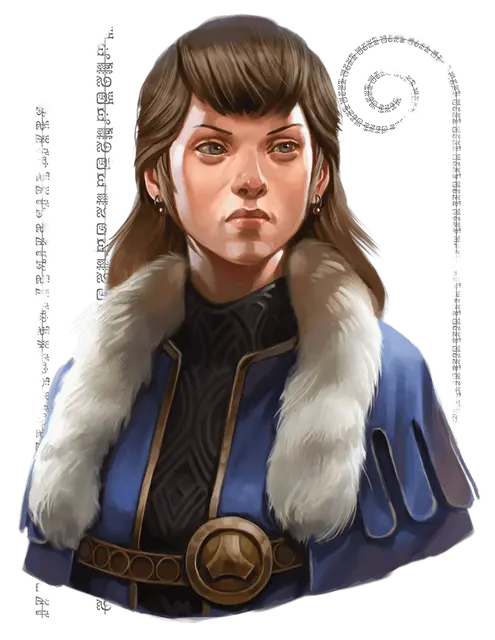

Дювесса Шейн
Duvessa Shane
Средний Гуманоид (Человек иллюсканец), законно-добрый, именной НИП

Класс Доспеха 10
Хиты 9 (2к8)
Скорость 30 футов
| мод | спас | ||
|---|---|---|---|
| СИЛ | 10 | +0 | +0 |
| ЛОВ | 11 | +0 | +0 |
| ТЕЛ | 10 | +0 | +0 |
| мод | спас | ||
|---|---|---|---|
| ИНТ | 16 | +3 | +3 |
| МДР | 14 | +2 | +2 |
| ХАР | 16 | +3 | +3 |
Навыки Обман +5, Проницательность +4, Убеждение +5
Чувства пассивное Восприятие 12
Языки Общий, Великаний, Дварфийский, Орочий
Опасность 0
Бонус мастерства +2
Особенности
Информация для отыгрыша. Дочь глубоководской купчихи и владельца таверны, Дювесса унаследовала талант матери к переговорам и очарование отца. Из-за своего возраста и того, что она первая женщина Городской спикер Брин Шандера, ей многое приходится доказывать.
Идеал. : «Люди Долины Ледяного Ветра - стойкие. Они могут выстоять в любую бурю.»
Привязанность. : «Моя мать учила меня быть хорошим лидером. Я не разочарую её.»
Слабость. : «Я ни на дюйм не уступлю в споре или конфликте.»
Действия
Кинжал. . Рукопашная или Дальнобойная атака оружием: +2 к попаданию, досягаемость 5 фт. или дистанция 20/60 фт., одна цель. Попадание: 2 (1к4) колющего урона. Дювесса носит с собой всего один кинжал.
Реакции
Парирование. Дювесса добавляет 2 к своему КД против одной рукопашной атаки оружием, которая должна попасть по ней. Для этого Дювесса должна видеть атакующего и держать в руке рукопашное оружие.